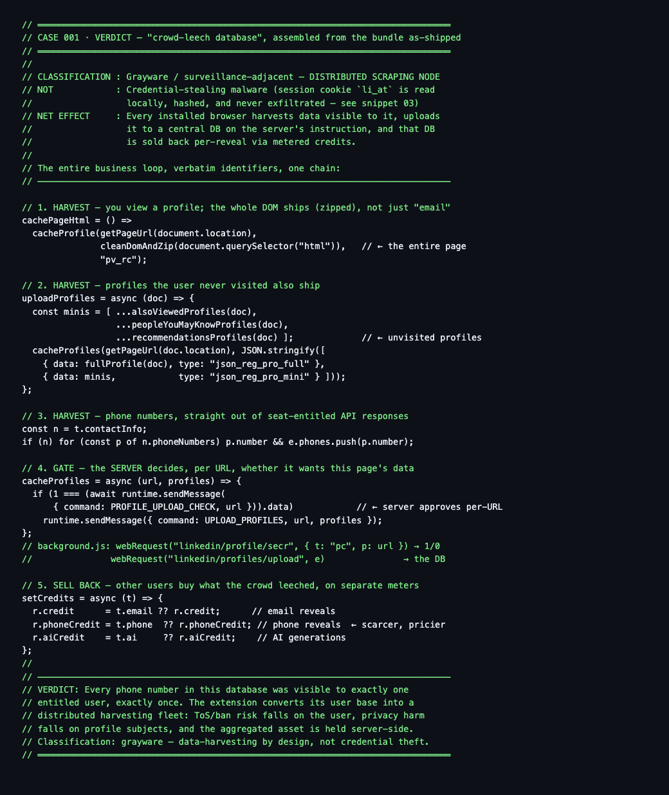

Security Research · Case File · Grayware
The Crowd Leech
A Chrome extension was recommended to thousands of followers as harmless because it only reads LinkedIn's contact info feature. Thirty minutes of static reverse engineering later, the mechanism underneath had a name: a distributed scraping network, one installed browser at a time. Not magic. Not malware. A leecher with a business model.
The short version
- Target: "Email Finder by ContactOut", Chrome Web Store ID
jjdemeiffadmmjhkbbpglgnlgeafomjo, v5.18.3, MV3, about 877 KB - It does not steal your LinkedIn password or ship your
li_atcookie. That defense of it is true, and it is also beside the point - Every profile you view ships wholesale: full Voyager JSON plus the entire page DOM, compressed and queued for upload
- People you never clicked on ship too: "also viewed", suggested people, and recommendation sidebars
- Before each upload, the server answers 1/0 per URL on whether it wants that page. Harvesting is demand-driven, not incidental
- It taps LinkedIn's internal APIs and pulls
phoneNumbersstraight out of Sales Navigator and Recruiter responses - Every claim below is anchored to a file and byte offset in the public evidence repo
01The recommendation
The dispute started the way most of them do: someone with an audience told that audience a tool was safe. The claim was precise, which made it testable. The extension only reads LinkedIn's own contact info feature, the same one you see when you tap "Contact info" on a profile. No leet haxor involved.
That claim is half right, and the half that is right is the least interesting half. Yes, the data source is LinkedIn's contact info feature, plus everything else the page contains. The mechanism is the finding: aggregation at fleet scale, then resale. The distinction that settles the argument is not source versus source. It is what one browser does versus what a hundred thousand of them do on instruction.
Rather than keep trading adjectives, I pulled the store-signed CRX3, unpacked the webpack bundle, and read it. Static analysis, no deobfuscation beyond reading minified ES5, about thirty minutes with an LLM doing the heavy lifting on the ugly parts. Every finding below cites the file and byte offset where it lives.
02What ships when you view a profile
Open any LinkedIn profile with the extension installed and two things get queued for upload. Neither is "just the contact info".
First, the structured data. LinkedIn embeds its server-side-rendered Voyager payloads in <code id="bpr-guid-*"> blocks. The extension parses them out, filters to the interesting entity types (Profile, Position, Education, Company, Skill, School), appends your connection and follower counts, and labels the result json_reg_pro_full (content_script.js @607580).
Second, the page itself. Not the contact info popup. The entire DOM:
cachePageHtml = () => cacheProfile(url, cleanDomAndZip(
document.querySelector("html")), "pv_rc")The whole document is serialized, stripped of scripts, LZ-compressed, base64-encoded, and queued under type pv_rc (content_script.js @624075). Anything rendered for your eyes on that page, including any contact block you were entitled to see, is in the shipment.
03The bystanders
Here is the part the "it only reads what you see" defense cannot survive. The same function collects the sidebars: people also viewed, people you may know, and profiles appearing in recommendations. You never clicked them. Their mini-profiles ship anyway, typed json_reg_pro_mini (content_script.js @607580).
const minis = [ ...alsoViewedProfiles(doc),
...peopleYouMayKnowProfiles(doc),
...recommendationsProfiles(doc) ];If your profile has ever appeared in anyone's "people also viewed" sidebar, and that person ran this extension, you were harvested. You did not install anything. You were never asked. Your entitlement was someone else's sidebar.
04The entitled screens
The extension also hooks LinkedIn's internal API responses directly. A watcher list intercepts XHR traffic on voyager/api/identity/dash/profiles, the sales-api family (people search, lead search, profiles, companies), and the talent endpoints (content_script.js @1448099).
One handler deserves exact quotation:
const n = t.contactInfo;
if (n) for (const p of n.phoneNumbers) p.number && e.phones.push(p.number);Phone numbers, lifted straight out of Sales Navigator and Recruiter responses. Those APIs render phone numbers because a seat holder paid for the entitlement. The extension sits in that seat holder's browser and copies the plate.
05The gate
The most revealing finding is not what gets collected. It is who decides what gets kept. Before any upload, the client asks the server, per URL:
(background.js @94888)
The server aims the fleet. If a paying customer's search queue wants a given page, "check" returns 1 for that URL and the next browser that visits it delivers the goods. Harvesting is not a side effect of browsing. It is inventory acquisition on demand.
The connection graph gets walked too, on a schedule from the extension's own config: connection checks every 0.5 minutes, 40 profiles per connections page, first-degree URLs reported specifically, and background tabs that open a profile, scrape it, and close (content_script.js @31285). To LinkedIn's rate limiting, that automation is indistinguishable from you browsing. Which is the point.
06Why phones cost extra
The credit wallets are the confession. The client tracks three separate balances: credit for email reveals, phoneCredit for phone reveals, aiCredit for AI features (user module @58608).
Emails are cheap to source. They can be pattern-guessed (first.last@company.com) and verified with a plain SMTP handshake, server-side, at scale, without any browser involved. Phones cannot be guessed. There is no SMTP for dialing. Every phone number in that database was rendered on some entitled screen, at least once, and copied at that moment. Sales Navigator here, Recruiter there, a contact info popup on a first-degree profile, a tel: link, a regex over an arbitrary page if the user enabled "Anywhere" mode on *://*/*.
So the phone wallet is priced separately because the sourcing is fundamentally different. Not harder engineering. Rarer accidents.
07What it is not
Discipline runs both ways, so the acquittals, with the same receipts:
| Accusation | Verdict |
|---|---|
Steals your LinkedIn session (li_at) | No. Read locally, a 32-bit hash is kept for logout detection, raw value never transmitted (docs/03) |
| Captures passwords or keystrokes | No capture path found. Login-page scripts only do session and logout detection |
| Violates Chrome Web Store policy | Apparently not. The privacy policy discloses the harvesting, and disclosure is what the policy asks |
| Violates the LinkedIn User Agreement | Yes. Section 8.2, no scraping, and the agreement binds the account holder |
Calling this credential-stealing malware would be easier and lazier. It would also be wrong, and being wrong about the mechanism is how you lose the argument you were winning. The accurate classification is grayware: a distributed scraping node with a compliant privacy policy.
08The risk allocation
Follow the liability and the design suddenly reads as elegant, in the way parasites are elegant.
The user installs the extension. The user's browser does the scraping at human-plausible rates. The user's LinkedIn account carries the agreement with the no-scraping clause. When enforcement comes, it comes as a restriction or ban on the installer's account.
ContactOut, meanwhile, holds no account with LinkedIn, runs no scrapers of its own, and sits on the aggregated database server-side, selling it back one reveal at a time. The people whose data fills it, the profile subjects, never consented to anything and carry the privacy harm. Three parties, and the only one holding both the asset and zero exposure is the vendor.

09Reproduce it yourself
The full case file is public: seven findings documents, the verbatim manifest, annotated snippets with byte offsets, and the tooling to rerun everything against the current store build.
github.com/saladin0x1/chrome-extension-analysis
The CRX fetcher strips the store signature wrapper, the context extractor pulls readable neighborhoods out of the minified bundle, and every snippet in the repo carries its file and offset so you do not have to trust a single word of mine. Run it before the extension updates past v5.18.3, and note what the store still says about it while you do.
Not magic, not malware. A crowd, leeched by consent of one and to the profit of another.
Disclosure note: analysis was performed on a publicly downloadable store artifact for interoperability and research understanding. No vendor code is republished beyond short annotated excerpts. The recommendation thread and its participants are not named; the argument survives without them. All trademarks belong to their owners.